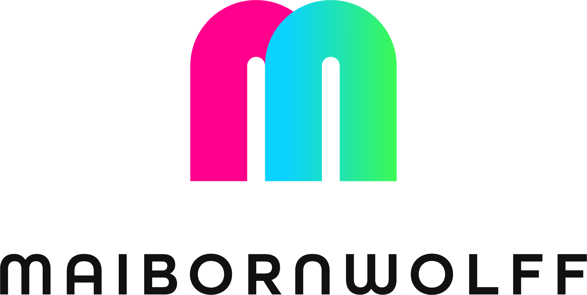

<tool-bar-component></tool-bar-component>

<file-extension-bar-component></file-extension-bar-component>
<div class="ribbon-bar-wrapper">
	<ribbon-bar-component class="ribbon-bar-component"></ribbon-bar-component>
</div>

<div class="action-buttons">
	<md-button
		ng-if="$ctrl._viewModel.focusedNodePath.length > 0"
		class="md-fab md-primary cc-shadow long-button"
		aria-label="Remove Focus on node"
		ng-click="$ctrl.removeFocusedNode()"
	>
		Show complete map
	</md-button>
</div>

<code-map-component></code-map-component>

<legend-panel-component></legend-panel-component>

<node-path-panel-component></node-path-panel-component>

<loading-gif-file-component></loading-gif-file-component>

<div id="mw-logo">
	<div class="logo">
		<a href="https://www.maibornwolff.de" target="_blank"></a>
		<h2>
			<span>CodeCharta {{ $ctrl._viewModel.version }}</span>
		</h2>
	</div>
</div>

<node-context-menu-component></node-context-menu-component>
